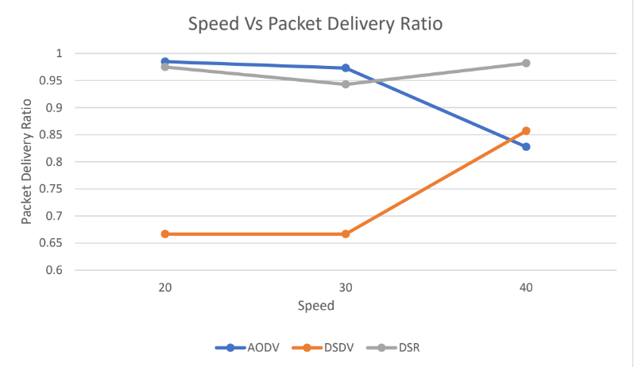
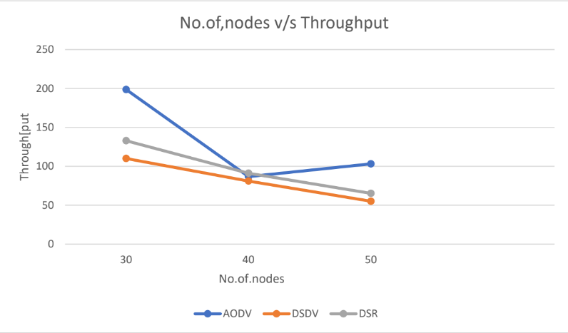
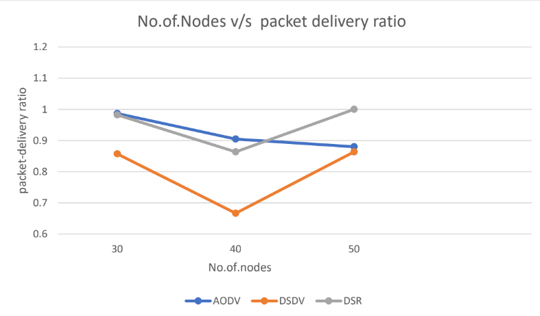

Computer Networks Project.
Comparative Analysis Of Wireless Adhoc Networks
Based on varying speed and calculating throughput

Based on Varying speed and calculating packet delivery ratio

Varying nodes and Throughput:

Our simulation work tells about the performance of mobile ad hoc networking three routing protocols AODV, DSR and DSDV. This is basically a study of performance of routing protocols, used in mobile ad hoc networking , in high mobility cases under low(30), medium(40) and high(50) density scenarios. We vary the number of nodes from 30 (low density) to 50 (high density) in a fixed topography of 1500*1500 meters. We will find how the performance varies widely across different number of nodes using network scenarios constructed and different types of speed in node mobility under network.